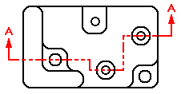
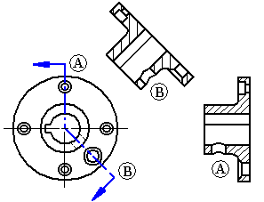
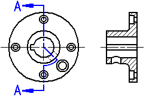

Cutting planes
Cutting planes are used to create section views. The Cutting Plane command draws a cutting plane line on the part view you want to use as the basis for the section view.

Cutting planes can be used just once.
Selecting a part view
You can draw the cutting plane on any part view. This can be any orthographic, auxiliary, or detail view on the drawing.
-
Auxiliary views often show the part at the optimal orientation for making the section cut.
-
A detail view can be useful for creating sections due to its scale. Sections created from detail views inherit the same scale as the detail view.
Drawing a cutting plane and defining view direction
You draw a cutting plane using many of the drawing tools. When you select the Cutting Plane command and then select a part view, the command ribbon updates and displays commands for drawing a cutting plane.
A cutting plane can consist of a single line or multiple elements, such as lines and arcs.

If you draw a cutting plane that consists of more than one element, the cutting plane must meet the requirements defined in the Cutting Plane command help topic.
When you have finished drawing the cutting plane, you select the Close button on the Home tab. You can then dynamically define the cutting plane view direction by clicking on one side of the view to be sectioned.
If you need to change the view direction of an existing section view, you can select the cutting plane line used to create the section view, and then select the Flip Direction command on its shortcut menu. You also can drag the cutting plane view direction lines to the opposite side of the cutting plane. If you change the view direction, you must also update the section view.
Multiple segment cutting planes
If the cutting plane is defined by multiple lines that are not orthogonal, or the first and last lines in the cutting plane are not parallel, you must specify whether the first line (A) or last line (B) in the cutting plane will be used to define the fold angle for the section view rotation. The line you select affects the placement angle of the section view.

Arcs in cutting planes
You can include arcs in cutting planes. If an arc is included in the cutting plane, it must be connected to a line at both ends. You cannot begin or end a cutting plane with an arc.
When you create a section view from a cutting plane that includes an arc, the Revolved Section View option on the command bar is automatically selected. You can clear this option if you want to create a non-revolved section view.

You cannot create additional section views from a section view that was generated from a cutting plane that includes an arc.
Displaying the cutting plane
After a cutting plane is created, you can control the display of cutting plane lines by selecting the cutting plane annotation and then using the options on the Cutting Plane Selection command bar and in the Cutting Plane Properties dialog box.
After a section view is placed, you can control the display of the cutting plane graphics using the following check box on the General tab (Drawing View Properties dialog box):
-
Show view annotation (Cutting Plane, Detail Envelope, Viewing Plane)
You also can hide the cutting plane by moving the cutting plane element to its own layer, and then hiding the layer. To learn how to do this, see the help topic, Hide a cutting plane.
You can control the display of edges resulting from cutting plane lines created with multiple line segments using the Advanced Edge Display Options dialog box or in the Drawing View Properties dialog box. To learn how, see Show or hide cutting plane lines in section views.
Modifying the cutting plane
-
You can add dimensions and relationships between the cutting plane and the part view to control the position, size, and orientation of the cutting plane.
-
You can edit the shape of the cutting plane line by double-clicking it or using the Edit button on the Cutting Plane Selection command bar.
-
You can lengthen or shorten the open end of a terminator on the view direction line by selecting the end of the terminator that is not connected to the cutting plane, and then dragging it.
-
You can select and move the cutting plane caption text.
-
You can modify formatting attributes of a selected cutting plane annotation by editing its properties.
For more information, see the help topic Formatting cutting plane annotations.